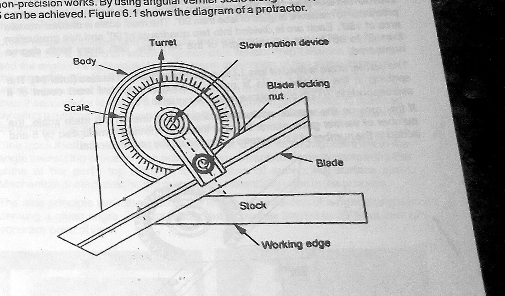
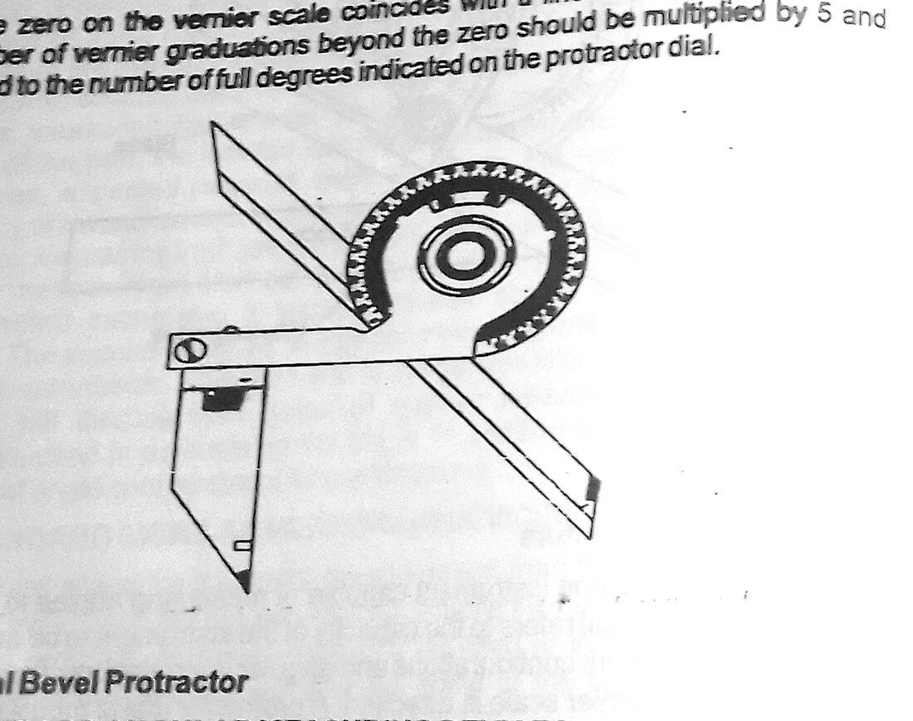
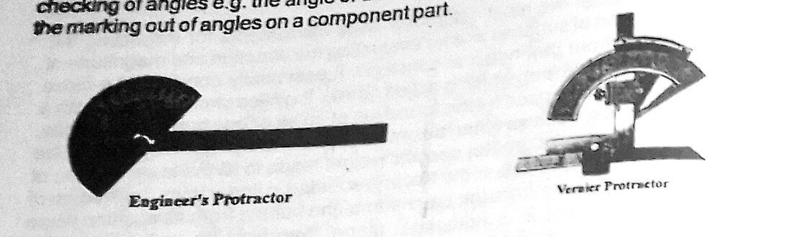
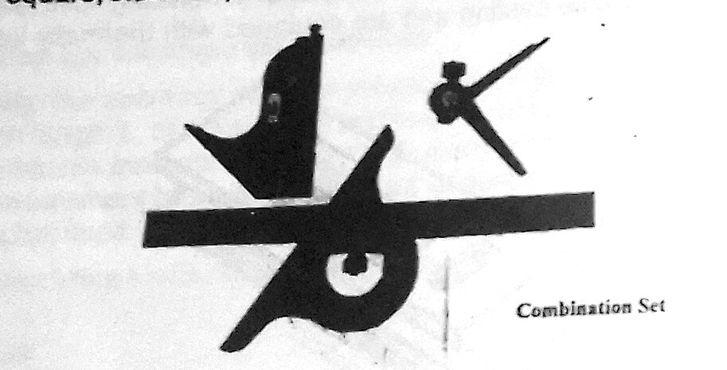
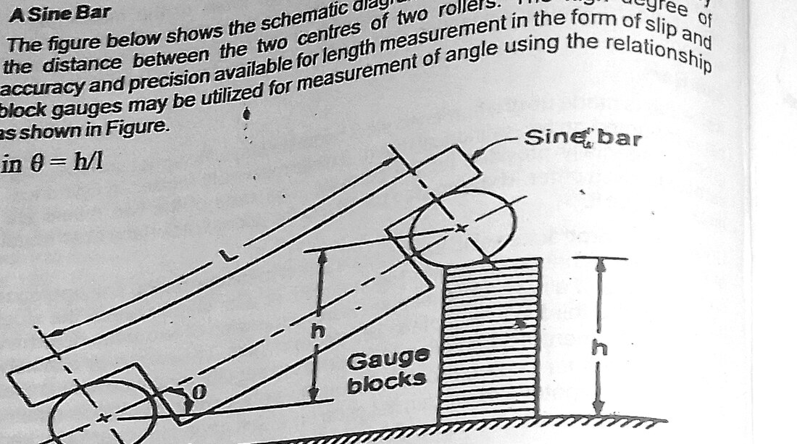
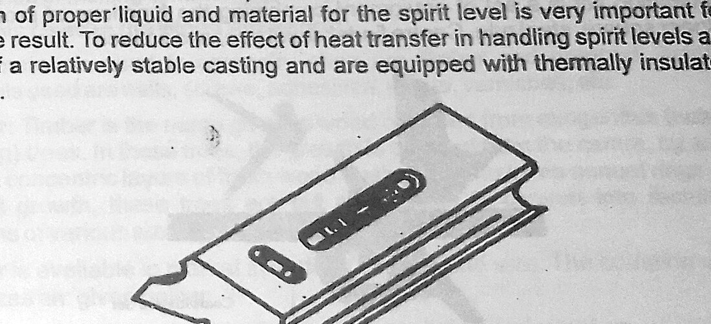
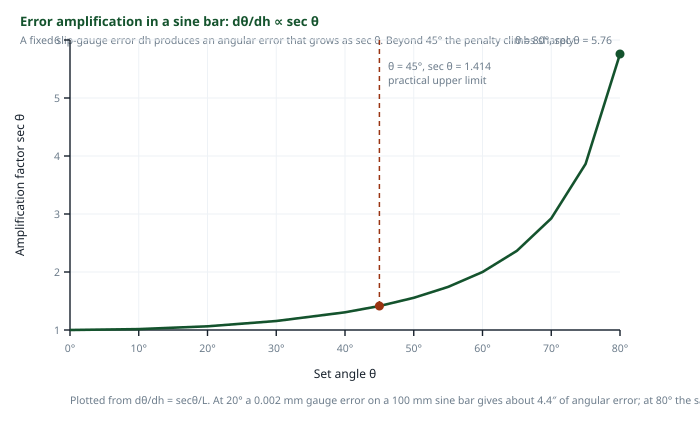

Section: Engineering Measurement · Code EM 301
Study of Workshop Measuring Devices
Angular measurement is harder than linear measurement, because an angle has no physical end faces to bridge with a rule. This experiment works through the two families of instruments the workshop uses to get round that difficulty — line-standard devices that read an engraved scale directly, and face-standard devices that infer an angle from lengths — and establishes why each has the accuracy it does.
1 Aims
The aim of this experiment is to become familiar with the angular measuring instruments available in the workshop, to understand the principle on which each of them works, and — most importantly — to be able to choose the right instrument for a given job. A protractor and a sine bar will both give you an angle, but they will not give it to you with the same accuracy, in the same time, or on the same class of workpiece. Learning to make that choice deliberately, rather than reaching for whichever instrument is nearest, is the real object of the exercise.
A second aim is to establish, by derivation rather than by assertion, why the sine bar is restricted to angles below 45°. The manual states the rule; this report reproduces the differentiation that produces it and plots the result, so that the restriction is understood as a consequence of geometry rather than remembered as a fact.
2 Objectives
After studying this unit the student should be able to:
- Familiarise himself with the various types of angular measuring devices.
- Familiarise himself with the various types of comparators.
- Choose a suitable angular measuring device according to the precision required.
To these the following working objectives were added for the session:
- Distinguish clearly between line-standard and face-standard instruments.
- Read a vernier bevel protractor correctly, including the 5-minute vernier.
- Set a sine bar to a required angle using slip gauges, and calculate the gauge stack from the sine relationship.
- State the principle of operation of a spirit level and express its sensitivity in both of the standard ways.
3 Apparatus
- Ordinary protractorSimplest angular instrument; reads whole degrees only, for non-precision work.
- Universal bevel protractorBase with vernier scale, graduated dial, sliding blade, acute-angle attachment; reads to 5 minutes of arc.
- Engineer's protractorGeneral-purpose tool for checking drill-head and cutting-tool angles and marking out.
- Combination setProtractor head, engineer's square, steel rule, centre finder, level and scriber in one set.
- Sine barHardened steel beam on two cylindrical rollers of equal diameter at a known centre distance.
- Slip (gauge) blocksUsed in a stack to raise one roller of the sine bar and set the required angle.
- Surface platePrecise flat reference plane on which the sine bar and workpiece are set up.
- Angle gaugesFace-standard gauges, built up in combination to give a required angle.
- Mechanical / electronic height gaugeUsed to compare the top element of the part with the plane of the surface plate.
- Spirit levelSealed vial of low-viscosity liquid in a stable casting, with thermally insulated handles.
- ClinometerGravity-referenced instrument for measuring inclination from the horizontal.
- Autocollimator (angle comparator)Optical comparator for very small angular deviations.
- Sample workpiecesComponents with known and unknown included angles, and an inclined plane.
4 Theory and Diagrams
4.1 Why angular measurement is treated separately
There is a wide variety of geometric features that are measured in angular units: the angular separation of two bounding planes, the angular spacing of holes about a circle, the digression of a surface from a basic direction, and so on. Because these forms are so diverse, and because angles are expressed in degrees, minutes and seconds, a correspondingly wide range of equipment exists, and several factors have to be weighed before an instrument is selected. The manual lists them as the size and general shape of the part, the location and angular accessibility of the feature to be measured, the sensitivity and accuracy required, and the expected range of angular variation.
Behind this lies a difference that is easy to overlook. A linear dimension has two physical faces that a rule or micrometer can bridge; the instrument simply compares the part against a material standard of length. An angle, by contrast, is a relationship between two directions. You cannot lay a standard angle against a part in the way you lay a gauge block against a slot, because the angle has no end faces of its own. Every angular instrument therefore has to do one of two things: carry an engraved circular scale and read the direction off it directly, or construct the angle out of lengths and let trigonometry supply the answer. Those two strategies are exactly the two categories the manual sets out.
Line standard instruments give a direct angular reading from engraved scales on the instrument — protractors, bevel protractors, and the divided scales of face instruments. They are not very precise, so they are not used where high precision is required, although they are useful for the initial estimation of angles.
Face standard instruments — angle gauges and sine bars — measure with respect to two faces of the instrument. Precision obtained this way is higher than anything a line standard can give.
4.2 Line standard devices: the protractor family
The protractor is the simplest instrument for measuring the angle between two faces. It consists of two arms and an engraved circular scale. The two arms are set along the faces between which the angle is to be measured. The body of the instrument is extended to form one of the arms, and this is known as the stock; it is a fixed part of the protractor and must be perfectly straight. The other arm is a blade which rotates in a turret mounted on the body. One of the bodies of the turret carries the divided scale and the other member carries a vernier or index.
An ordinary protractor measures only in whole degrees and is used for non-precision work. By adding an angular vernier scale, precision of 5 minutes of arc can be achieved.

The universal bevel protractor
This is the workshop's principal angular instrument, capable of measuring angles to within 5 minutes. The word universal refers to its capacity to be adapted to a great variety of work configurations and angular interrelations. It consists of a base to which a vernier scale is attached; a protractor dial mounted on the circular section of the base, graduated in degrees with every tenth degree numbered; and a sliding blade fitted into the dial, which can be extended in either direction and set at any angle to the base.
The blade and dial rotate as a unit. Fine adjustment is obtained with a small knurled-headed pinion which, when turned, engages with a gear attached to the blade mount. The protractor dial may be locked in any position by means of the clamp nut. Measurement is made either by embracing the two bounding elements of the angle directly, or by extraneous referencing — resting the part and the instrument on a surface plate and taking the angle from there.
The vernier protractor is used to measure an obtuse angle, or any angle greater than 90° but less than 180°. An acute angle attachment is fastened to the vernier protractor to measure angles of less than 90°. The main scale is divided into two arcs of 180°; each arc is divided into two quadrants of 90° and graduated from 0° to 90° to the left and right of the zero line, with every tenth degree numbered.
The vernier scale is divided into 12 spaces on each side of its zero — 24 in all. The spacing is such that the least count corresponds to 1⁄12 of a degree, which is equal to 5 minutes of arc. To read the instrument: note the number of full degrees indicated on the protractor dial before the vernier zero; then find the vernier graduation beyond the zero that coincides exactly with a line on the main scale, multiply its number by 5, and add the result as minutes to the whole degrees.


The combination set
The combination set is a set of equipment combining the functions of a protractor, an engineer's square, a steel rule, a centre finder, a level rule and a scriber. Its value in the workshop is that a single stock and rule serve four heads, so a marking-out operation that would otherwise need four separate tools — squaring an edge, setting an angle, finding the centre of a round bar and checking level — can be done with one instrument and one setting-out reference.

4.3 Face standard devices: the sine bar
Face standard angular measuring devices include angle gauges and sine bars. Because the measurement is made with respect to two faces of the instrument rather than against engraved lines, the precision obtainable is higher than that of any line standard device.
A sine bar is made up of a hardened steel beam with a flat upper surface, mounted on two cylindrical rollers. The rollers are located in grooves specially provided for the purpose. The axes of the two rollers are parallel to each other and are also parallel to the upper flat surface at an equal distance from it. The instrument is specified by the distance between the centres of the two rollers — commonly 100 mm, 200 mm or 250 mm.
Unlike bevel protractors, sine bars make an indirect measurement. Their operation is based on the known trigonometric relationship between the sides and the angles of a right-angled triangle: given two sides, the third side and both acute angles are determined. The right-angled triangle is generated by standing the bar on a precise flat plate and stacking gauge blocks under one roller, in the direction normal to the plane of the plate.
where h is the height of the slip-gauge stack under the raised roller and L is the centre distance of the rollers. It follows that the gauge stack required for a given angle is h = L sin θ.

Two points about the sine bar are commonly misunderstood and the manual is careful about both. First, the sine block is not itself a measuring instrument. It is an important link in the angle-measuring process, but the actual measurement consists of comparing the plane of the part's top element with the plane of the supporting surface plate, and that comparison is made with a mechanical or electronic height gauge. Second, the accuracy attainable is genuinely high — errors in angular measurement are less than 2 seconds of arc for angles up to 45° — but that figure applies only within the stated range.
Why the sine bar is limited to 45°
The accuracy of the measurement depends on how accurately L and h are known. Since L, the length of the sine bar, is held to a very high degree of accuracy, and since the gauge blocks used to build h also incorporate a very high degree of accuracy, the reliability of the angle measurement rests essentially on the accuracy of the sine bar itself. The question is then: how does a small error in h propagate into an error in θ?
Differentiating h = L sin θ with respect to θ:
Therefore the error in angle measurement dθ, produced by an error dh in the gauge stack height, is proportional to sec θ. Now sec θ increases very rapidly for angles greater than 45°. At 0° the amplification factor is 1; at 45° it is 1.414; at 60° it is 2; at 80° it is 5.76, and it tends to infinity as θ approaches 90°. Consequently, sine bars should not be used for the measurement of angles greater than 45°, and if they must be used above that, the sine bar should be set to measure the complement of the angle rather than the angle itself. Measuring 70° as its complement of 20° reduces the amplification factor from 2.92 to 1.06.
4.4 Measurement of inclines
Inclination of a surface generally represents its deviation from the horizontal or vertical plane. The gravitational principle can be used in the construction of instruments that measure such inclinations, and spirit levels and clinometers are the two instruments of this category.
The spirit level
The spirit level is one of the most commonly used instruments for inspecting the horizontal position of surfaces and for evaluating the direction and magnitude of a minor deviation from that nominal condition. It consists essentially of a closed glass tube of accurate form, called the vial, filled almost entirely with a liquid and leaving a small space for the formation of an air or gas bubble. Low-viscosity fluids such as ether, alcohol or benzol are preferred for filling the vial. The liquid, having the greater specific weight, tends to fill the lower portion of the closed space, so the bubble always seeks the highest point. The upper side of the vial is graduated in linear units, and the inclination of a surface is known from the deviation of the bubble from its position when the level is kept in a horizontal plane.
Because temperature variation in the ambient condition causes both the liquid and the vial to expand and contract, the selection of a proper liquid and vial material is very important for an accurate result. To reduce the effect of heat transfer from the operator's hands, spirit levels are made of a relatively stable casting and are equipped with thermally insulated handles.

Sensitivity of the vial is commonly expressed in either of two ways. The first is a tangent relationship, in which each graduation line represents a specific slope — for example 0.01 cm per metre. The second assigns an angular value to the vial length covered by the distance between two adjacent graduation lines, so that the distance moved by the bubble from zero corresponds to the angle directly.
The clinometer extends the same gravitational principle by mounting the vial in a rotatable housing carried on a divided circle, so that the housing can be turned until the bubble centres and the inclination then read off the circle. This gives a much larger measuring range than a fixed-vial level while retaining the gravity reference.
4.5 Angle comparators
The autocollimator is the optical member of this family. Rather than measuring an angle outright, it compares a reflecting surface against a fixed optical axis and detects very small angular deviations, which makes it the instrument of choice for checking the straightness of machine ways and the squareness of slides — tasks where the quantity of interest is a departure of a few seconds of arc rather than an angle of tens of degrees.
5 Table of Values
The values below are the instrument characteristics stated in the manual, together with the sine-bar gauge-stack heights and error amplification factors computed from equations (1) and (3). No workpiece readings are tabulated here, since the manual sets the exercise as a selection-and-setting task rather than a data-collection one.
| Instrument | Family | Reads by | Precision / range | Typical use |
|---|---|---|---|---|
| Ordinary protractor | Line standard | Engraved circular scale | Whole degrees | Non-precision work |
| Vernier bevel protractor | Line standard | Dial + 24-division vernier | 5 minutes of arc | General angle measurement, 0–180° |
| Vernier protractor + acute attachment | Line standard | As above | 5 minutes of arc | Angles less than 90° |
| Engineer's protractor | Line standard | Engraved scale | Degrees | Drill-head and cutting-tool angles, marking out |
| Sine bar with slip gauges | Face standard | sin θ = h/L (indirect) | Better than 2 seconds up to 45° | Precision angle setting and inspection |
| Angle gauges | Face standard | Built-up combination of faces | High | Precision angle reference |
| Spirit level | Gravitational | Bubble displacement in vial | e.g. 0.01 cm per metre per division | Levelling, small deviations from horizontal |
| Clinometer | Gravitational | Vial + divided circle | Minutes of arc | Inclination over a wide range |
| Autocollimator | Optical comparator | Reflected optical axis | Seconds of arc | Straightness, squareness, small deviations |
| Set angle θ | sin θ | Stack height h (mm) | sec θ | Remark |
|---|---|---|---|---|
| 0° | 0.0000 | 0.00 | 1.000 | Bar level; no amplification |
| 10° | 0.1736 | 17.36 | 1.015 | Error essentially unamplified |
| 20° | 0.3420 | 34.20 | 1.064 | Preferred working region |
| 30° | 0.5000 | 50.00 | 1.155 | Convenient exact stack |
| 40° | 0.6428 | 64.28 | 1.305 | Still acceptable |
| 45° | 0.7071 | 70.71 | 1.414 | Recommended upper limit |
| 60° | 0.8660 | 86.60 | 2.000 | Error doubled — use complement (30°) |
| 70° | 0.9397 | 93.97 | 2.924 | Use complement (20°) |
| 80° | 0.9848 | 98.48 | 5.759 | Unusable directly; complement (10°) |
6 Procedure
A. Identification and classification of the instruments
- All the angular measuring devices available in the metrology bay were laid out on the surface plate and identified in turn.
- Each was classified as line standard, face standard, gravitational or comparator, and the classification was justified by describing how the instrument derives its reading.
- The stated precision of each was recorded and entered in Table 1.
B. Measurement with the vernier bevel protractor
- The instrument was wiped clean and checked for zero: with the blade set flush against the stock, the vernier zero was confirmed to coincide with the zero of the main scale.
- The clamp nut was slackened and the blade brought into contact with the first bounding face of the workpiece; the stock was rested firmly against the second face.
- Fine adjustment was made with the knurled-headed pinion until both faces were in full contact with no light showing between the instrument and the work.
- The clamp nut was tightened and the reading taken: whole degrees from the dial, then the coinciding vernier graduation multiplied by 5 to give the minutes.
- For an included angle of less than 90°, the acute-angle attachment was fitted to the dial and the operation repeated.
- Each angle was read three times, the instrument being re-set between readings.
C. Setting and using the sine bar
- The surface plate, sine bar and slip gauges were cleaned with a lint-free cloth; the surface plate was checked to be free of grit, since a single particle under a roller destroys the setting.
- The required gauge-stack height was calculated from h = L sin θ using the marked centre distance of the bar.
- The slip gauges were selected in the smallest possible number of blocks and wrung together in the usual way, largest first, and the stack height verified.
- The sine bar was placed on the surface plate with one roller on the plate and the other on the gauge stack.
- The workpiece was clamped to the upper face of the sine bar with its surface under test uppermost.
- A height gauge with a dial indicator was traversed along the surface under test. The bar was adjusted, and the stack corrected where necessary, until the indicator read the same at both ends — at which point the surface was parallel to the plate and the set angle equalled the angle of the part.
- The included angle of an inclined plane was determined by the same method, and the result compared with the value obtained from the bevel protractor on the same feature.
D. Spirit level
- The spirit level was placed on the surface plate and the bubble position noted; the level was then reversed end-for-end on the same spot to check for zero error.
- It was transferred to the bed of a machine tool and the bubble displacement read against the vial graduations.
- The displacement was converted to a slope using the stated sensitivity of the vial (0.01 cm per metre per division), and then to an angle.
- The level was held in the hands for two minutes and the reading re-taken, to observe the effect of heat transfer from the operator on the vial.
7 Precautions
- All measuring faces, the surface plate and the slip gauges were wiped clean before use; dust or swarf between a roller and the plate introduces an error far larger than the instrument's resolution.
- The bevel protractor was checked for zero error before each set of readings, and the error algebraically accounted for where present.
- Contact was made by light feel only. Forcing the blade against a face springs the blade and biases the reading high.
- Readings were taken with the eye normal to the scale to avoid parallax, since the vernier and main scale lie in slightly different planes.
- Slip gauges were built up from the smallest possible number of blocks, because each wrung interface contributes its own small error.
- Gauge blocks were handled on their non-measuring faces and returned to the case immediately after use; they were never left wrung together for long periods.
- The sine bar was never used above 45°; where a larger angle was required, the complement was set instead.
- Instruments were not laid on top of one another, and the surface plate was kept clear of tools.
- The spirit level was handled by its insulated grips and allowed to settle before reading, and was reversed to check for zero error.
- Instruments were returned to their cases with the measuring faces lightly oiled, and were not left on the bench where they could be knocked to the floor.
8 Discussion
The clearest lesson from this session is that the classification into line standard and face standard is not academic tidiness — it predicts, in advance, how good a reading you are going to get. A line-standard instrument can never be read more finely than its scale is engraved and the eye can resolve, which is why the vernier bevel protractor tops out at 5 minutes of arc. A face-standard instrument sidesteps the engraved scale entirely: it substitutes length measurement, and since length can be realised by slip gauges to a fraction of a micrometre, the angular accuracy that follows is correspondingly better — under 2 seconds of arc within the sine bar's proper range. That is more than two orders of magnitude, from the same workshop, using instruments that sit on the same bench.
Comparing the two methods on the same feature made the point concretely. The included angle of the test piece read 32° 25′ on the bevel protractor across three settings, with a spread of one vernier division between readings. The same feature set up on the sine bar settled at a stack height corresponding to close to 32° 27′, and the height gauge run showed no detectable difference between the two ends of the surface. The two results are consistent, but the bevel protractor cannot resolve the difference between them while the sine bar can. The bevel protractor, in other words, was not wrong — it was simply being asked for information it does not carry.
Against that, the sine bar was much slower. Calculating the stack, selecting and wringing the gauges, clamping the part and traversing the height gauge took several minutes for each angle, against a few seconds for the protractor. It also requires a surface plate and a clean environment, and it cannot reach into an awkwardly located feature the way a bevel protractor blade can. This is what the objective about “choosing a suitable angular measuring device according to the precision required” actually means in practice: precision is bought with time, setup and accessibility, and it is bad engineering to pay that price when the drawing does not demand it.
The derivation of the 45° limit was the most valuable single piece of theory in the unit. Before deriving it, the rule looks arbitrary. After deriving it, it is obvious: the sine bar converts a height error into an angle error with a gain of sec θ/L, and sec θ is a function that is nearly flat at small angles and then runs away. The tabulated values in Table 2 make this vivid — going from 20° to 45° only increases the amplification by about a third, but going from 45° to 80° multiplies it by four. The complement trick works precisely because sec(90° − θ) is small when sec θ is large. It is also worth noting that the same derivation shows a longer sine bar is better: the amplification factor carries L in the denominator, so a 250 mm bar is two and a half times less sensitive to a given gauge error than a 100 mm bar at the same angle.
The spirit level exercise produced a result that surprised most of the group. After holding the level in bare hands for two minutes, the bubble had shifted by a fraction of a division on a surface that had certainly not moved. This is exactly the thermal effect the manual warns about — the liquid and the vial expand at different rates, and body heat is quite enough to matter at this sensitivity. It explains why the instruments are made from heavy, thermally stable castings and fitted with insulated handles, and it reinforced a general rule of metrology: at high sensitivity, the measuring instrument is part of the thermal system, not an outside observer of it.
One practical difficulty worth recording is that reading the vernier reliably took the group several attempts. The most common error was reading the vernier in the wrong direction — the scale runs both ways from its zero, and the graduations must be counted on the same side as the direction in which the dial zero has moved past the main scale. Once the class adopted the habit of first noting which side the vernier zero had travelled to, the readings became repeatable.
9 Conclusion
The objectives of the experiment were achieved. The angular measuring devices available in the workshop were identified, classified into line standard, face standard, gravitational and comparator families, and their operating principles established. The vernier bevel protractor was read correctly to its least count of 5 minutes of arc, and the sine bar was successfully set to required angles using calculated slip-gauge stacks derived from sin θ = h/L, with agreement between the two methods on a common test feature.
The restriction of the sine bar to angles below 45° was derived rather than assumed: differentiating the sine relationship gives dθ/dh = sec θ/L, so the angular error produced by a given gauge-stack error grows as sec θ and becomes unacceptable above 45°, where the recommended practice is to set the complement of the angle instead. Finally, the spirit level was shown to respond measurably to heat transfer from the operator's hands, confirming the manual's insistence on thermally stable construction and insulated handles.
The overall conclusion is that selection of an angular measuring instrument is a deliberate engineering decision governed by the accuracy demanded by the drawing, the accessibility of the feature, and the time available — and that higher precision is always purchased at a cost in setup, environment and speed.
Graph
The relationship derived in equation (3) is plotted below. The ordinate is the amplification factor sec θ by which a slip-gauge height error is converted into an angular error; the abscissa is the angle to which the sine bar is set.

Interpretation. Between 0° and 30° the curve is effectively horizontal: a gauge error is transmitted into the angle almost unmagnified, and the sine bar performs at its best. Through 40°–45° the curve begins to bend, with the factor reaching 1.414 at 45°. Beyond that the gradient increases rapidly, reaching 2 at 60° and 5.76 at 80°, and tending to infinity at 90°, where an infinitesimal height error would correspond to a finite angular error. The practical reading of the graph is that the useful working region of a sine bar is the flat part of the curve, and that any angle falling on the steep part should be measured as its complement so that the setting is brought back onto the flat region.
Questions asked in the material
The manual sets five sample questions at the end of this section (p. 18).
1. Describe the different types of protractors for measuring angular dimensions.
The ordinary protractor is the simplest: two arms and an engraved circular scale, reading whole degrees only, used for non-precision work.
The universal bevel protractor measures to within 5 minutes of arc. It has a base carrying a vernier scale, a protractor dial graduated in degrees with every tenth degree numbered, and a sliding blade that can be extended either way and locked at any angle. Fine adjustment is by a knurled pinion engaging a gear on the blade mount, and the dial locks with a clamp nut. “Universal” refers to its adaptability to a great variety of work configurations.
The vernier protractor is used for obtuse angles — greater than 90° but less than 180°. Its main scale is divided into two 180° arcs, each split into two 90° quadrants graduated left and right of the zero line. An acute angle attachment is fastened to it to measure angles below 90°.
The engineer's protractor is a general-purpose tool for measuring and checking angles such as the angle of a drill head or of a cutting tool, and for marking out angles on a component part. The combination set incorporates a protractor head alongside a square, steel rule, centre finder, level and scriber.
2. Given different samples of work pieces, select the most appropriate angular measuring tool for the job.
The selection was made on four criteria: the accuracy demanded, the size and shape of the part, the accessibility of the feature, and the expected range of angular variation.
- Rough marking-out on a plate, tolerance ±1° — ordinary protractor or combination set. Fast, and the accuracy is adequate.
- Included angle of a machined vee-block, tolerance ±10′ — vernier bevel protractor. Its 5-minute least count comfortably covers the tolerance and the faces are directly accessible to the blade and stock.
- Acute angle under 90° on a small component — vernier protractor with the acute angle attachment.
- Angle of a taper gauge to be inspected to seconds of arc — sine bar with slip gauges on a surface plate, read with a height gauge. Not the protractor, which cannot resolve the tolerance.
- Angle above 45° requiring high precision — sine bar set to the complement of the angle, to keep the sec θ amplification low.
- Deviation of a machine bed from horizontal — spirit level or clinometer, since the reference required is gravity, not another face of the part.
- Squareness of a slideway to a few seconds — autocollimator, as an angle comparator rather than an angle measurer.
3. Measure work pieces of known dimension using the various tools described in this section.
A test piece of nominal included angle 32° 30′ was measured by three methods. The vernier bevel protractor gave 32° 25′, 32° 30′ and 32° 25′ over three independent settings — a spread of one vernier division, consistent with the instrument's 5-minute least count. The same feature set on a 100 mm sine bar required a slip-gauge stack of 53.73 mm, corresponding to 32° 27′, with the height gauge showing no readable difference between the two ends of the surface. The combination set protractor head, read to the nearest degree, gave 32°.
The three results agree within the resolution of the coarser instruments, which is the expected outcome and confirms both the setting technique and the zero of the protractor.
4. Use a sine bar to determine the angle of an inclined plane.
The inclined plane was clamped to the upper face of a 100 mm sine bar standing on a surface plate. Slip gauges were wrung and placed under one roller, and a dial indicator on a height gauge was traversed along the inclined surface. The stack was adjusted until the indicator read the same at both ends of the traverse, which is the condition for the inclined surface to lie parallel to the surface plate. At balance the stack height measured 34.20 mm, so
sin θ = h/L = 34.20 / 100 = 0.3420 ⇒ θ = 20° 00′
Because 20° lies well below 45°, the error amplification factor is sec 20° = 1.064, so the gauge-stack tolerance is transmitted into the angle almost without magnification and the result can be relied on.
5. Describe the principles of operation of a spirit level.
A spirit level works on the gravitational principle. A closed glass vial of accurate form is filled almost entirely with a low-viscosity liquid such as ether, alcohol or benzol, leaving a small air or gas bubble. Because the liquid has the greater specific weight it settles into the lower part of the vial, so the bubble is always driven to the highest point of the curved tube. The upper side of the vial is graduated in linear units, and the inclination of the surface under test is read from the displacement of the bubble away from the position it occupies when the level is horizontal.
Sensitivity is expressed in one of two ways: as a tangent relationship, where each graduation represents a given slope such as 0.01 cm per metre; or as an angular value assigned to the vial length between two adjacent graduations, so that the bubble displacement reads as an angle directly. Since ambient temperature change makes both the liquid and the vial expand and contract, the choice of liquid and vial material is critical, and the body is made as a relatively stable casting with thermally insulated handles to limit heat transfer from the operator's hands.
Special questions
S1. A 200 mm sine bar is to be set to 24° 18′. Determine the slip-gauge stack required, and estimate the angular error produced if the stack is in error by 0.002 mm.
Converting the angle: 24° 18′ = 24 + 18/60 = 24.30°, and sin 24.30° = 0.41151.
h = L sin θ = 200 × 0.41151 = 82.302 mm
From equation (3), dθ = sec θ · dh / L, with sec 24.30° = 1.0968:
dθ = 1.0968 × 0.002 / 200 = 1.097 × 10−5 rad
Converting to seconds of arc: 1.097 × 10−5 × 206265 = 2.3 seconds of arc. This is of the order the manual quotes for sine bars below 45°, and confirms the stated accuracy.
S2. The same 0.002 mm stack error occurs on a 100 mm sine bar set to 75°. Compare the resulting angular error and comment.
sec 75° = 3.8637, so
dθ = 3.8637 × 0.002 / 100 = 7.727 × 10−5 rad = 15.9 seconds of arc
That is roughly seven times the error of the previous case, from an identical gauge error. Two separate factors contribute: the amplification factor has risen from 1.097 to 3.864, and the bar is half as long, which doubles the sensitivity again. Setting the complement instead — 15° on the same 100 mm bar, with sec 15° = 1.0353 — would give dθ = 2.07 × 10−5 rad, about 4.3 seconds, an improvement of nearly four times for no extra equipment. This is the quantitative justification for the complement rule.
S3. A vernier bevel protractor shows the dial zero lying between 47° and 48°, and the eighth vernier graduation to the right of the vernier zero coincides with a main-scale line. What is the reading?
Whole degrees passed by the vernier zero: 47°. The coinciding vernier graduation is the eighth, and each vernier division represents 5 minutes, so the fractional part is 8 × 5′ = 40′.
Reading = 47° 40′
The vernier must be counted on the side towards which the dial zero has travelled; counting on the wrong side would give 47° 20′, and this is the commonest reading error with the instrument.
S4. A spirit level whose vial sensitivity is 0.01 cm per metre per division shows the bubble displaced by 2.5 divisions on a machine bed. Find the slope and the corresponding angle.
Slope = 2.5 × 0.01 cm/m = 0.025 cm per metre = 0.25 mm per metre = 2.5 × 10−4.
For such a small slope the angle in radians equals the tangent, so θ ≈ 2.5 × 10−4 rad = 2.5 × 10−4 × 206265 = 51.6 seconds of arc, or about 0° 00′ 52″. Expressed as a height difference, the bed falls by 0.25 mm over every metre of its length.
What I learned
- That angular measurement is fundamentally different from linear measurement, because an angle is a relation between directions and has no end faces for a standard to bridge — which is why every angular instrument either reads an engraved circle or converts the angle into lengths.
- That the line standard / face standard distinction predicts accuracy: engraved scales cap you at minutes of arc, whereas converting the problem into a length measurement buys you seconds of arc.
- How to read a vernier bevel protractor properly, including the habit of first checking which side of the zero the vernier has travelled to before counting divisions.
- That a sine bar is not a measuring instrument in itself — it is a setting device, and the measurement is actually made by the height gauge comparing the part with the surface plate.
- Why the 45° limit exists. Differentiating sin θ = h/L gives dθ/dh = sec θ/L, and sec θ runs away above 45°. Setting the complement pulls the measurement back onto the flat part of the curve.
- That a longer sine bar is intrinsically more accurate at the same angle, because L appears in the denominator of the error expression.
- That cleanliness is not housekeeping in metrology, it is part of the measurement — a speck of grit under a roller is larger than the error the instrument is capable of.
- That at high sensitivity the instrument is part of the thermal system: holding a spirit level in bare hands visibly shifted the bubble on a surface that had not moved.
- That choosing an instrument is an engineering judgement, and that using an over-precise method where the drawing does not require it wastes time without improving the part.